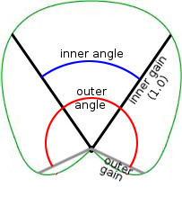

Directional Filter
Note: Prior to AeonWave 3.2.1 the directional filter was called angular filter (it got lost in translation). For backwards compatibility the angular name is still being recognized internally and the library is binary compatible with previous versions.

The Directional filter adjusts the volume based on the location of the sensor in relation to the sound sources forward direction. This makes it possible to specify directional sounds which could be loud in front of the sound source and hard to hear directly behind the sound source.
The gain in front of the emitter is 1.0. Sound stays 1.0 up to the inner angle and then gradually fades from 1.0 to outer-gain up to outer-angle. Beyond outer-angle the sound fades from outer-gain to 0.0 at 360 degrees.
0 (zero degrees) is directly in front of the sound source.
An angle of π (180 degrees) is from 90 degrees left to 90 degrees right and 90 degrees up to 90 degrees down.
AeonWave 2.6 also adds the option to specify the sound gain directly in front of the sound source which makes it possible to create a doughnut shaped sound distribution: soft in front, loud to the sides and soft again behind the sound source.
The default values make the sound source omni-directional.
The Directional filter is supported by Emitters and Audio-Frames.
Directional Filter parameters
The filter uses only one filter slot.
- AAX_DIRECTIONAL_FILTER
3D
-
p0
AAX_INNER_ANGLE- Inner angle of the audio cone.
AAX_RADIANS, AAX_DEGREES
Between 0 and 2π, defaults to 2π (360 degrees).
p1
AAX_OUTER_ANGLE- Outer angle of the audio cone.
AAX_RADIANS, AAX_DEGREES
Between 0 and 2π, defaults to 2π (360 degrees).
p2
AAX_OUTER_GAIN- Outer gain of the audio cone.
Between 0.0 and 1.0, defaults to 1.0
p3
AAX_FORWARD_GAIN- Gain of the sound directly in front.
Between 0.0 and 1.0, defaults to 1.0
Directional Filter state options
The filter is always enabled.